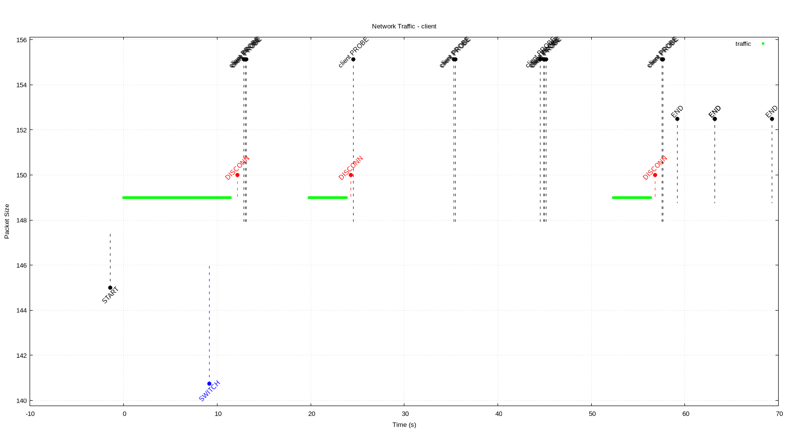
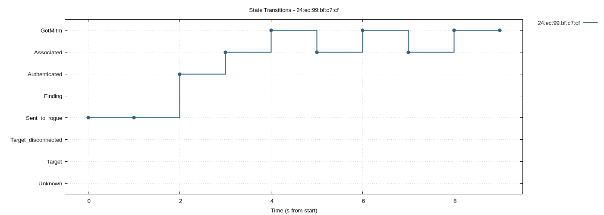
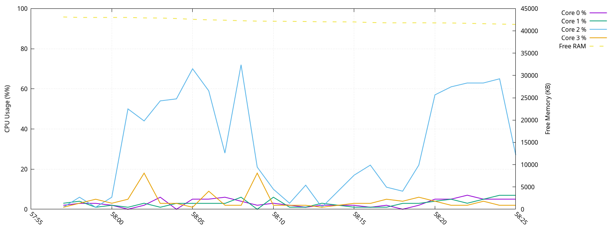
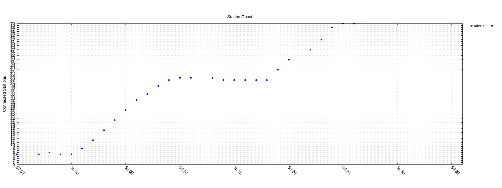

tshark_graphPacket size over time with event overlays (channel_switch rogueAP scenario). Disconnect/connect events from actor logs, client probe requests from pcap.

create_state_log_graphStation state transitions over time (staircase plot).

generate_resource_graphCPU core usage (%) and free RAM (KB) logged remotely via awk (pmk_gobbler Dlink scenario).

generate_station_graphConnected station count sampled via iw dev station dump (pmk_gobbler Dlink scenario).
